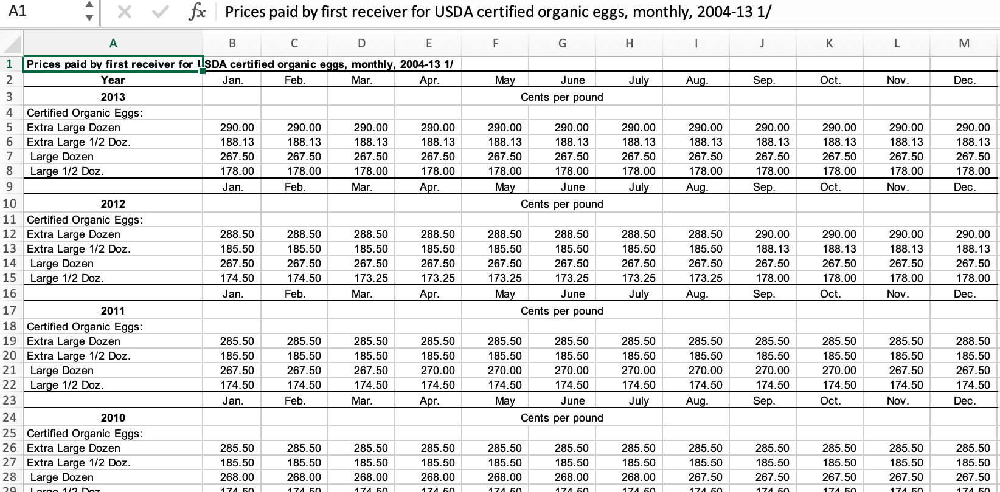
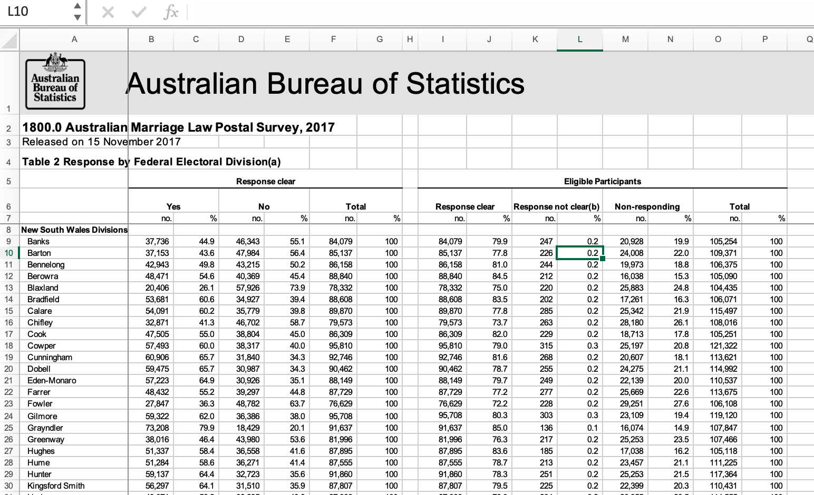
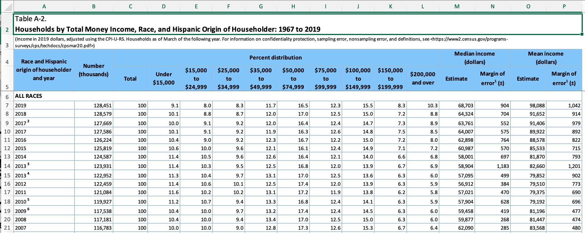

library(tidyverse)
library(readxl)
knitr::opts_chunk$set(echo = TRUE, warning=FALSE,
message=FALSE, cache=TRUE)Challenge 3 Solutions
challenge_3
solution
Tidy Data: Pivoting
Challenge Overview
Today’s challenge is to:
- read in a data set, and describe the data set using both words and any supporting information (e.g., tables, etc)
- anticipate the shape of pivoted data, and
- pivot the data into tidy format using
pivot_longer
The first step in pivoting the data is to try to come up with a concrete vision of what the end product should look like - that way you will know whether or not your pivoting was successful.
One easy way to do this is to think about the dimensions of your current data (tibble, dataframe, or matrix), and then calculate what the dimensions of the pivoted data should be.
Suppose you have a dataset with \(n\) rows and \(k\) variables. In our example, 3 of the variables are used to identify a case, so you will be pivoting \(k-3\) variables into a longer format where the \(k-3\) variable names will move into the names_to variable and the current values in each of those columns will move into the values_to variable. Therefore, we would expect \(n * (k-3)\) rows in the pivoted dataframe!
Suppose you have a dataset with \(n\) rows and \(k\) variables. In our example, 3 of the variables are used to identify a case, so you will be pivoting \(k-3\) variables into a longer format where the \(k-3\) variable names will move into the names_to variable and the current values in each of those columns will move into the values_to variable. Therefore, we would expect \(n * (k-3)\) rows in the pivoted dataframe!
Find current and future data dimensions
Lets see if this works with a simple example.
df<-tibble(country = rep(c("Mexico", "USA", "France"),2),
year = rep(c(1980,1990), 3),
trade = rep(c("NAFTA", "NAFTA", "EU"),2),
outgoing = rnorm(6, mean=1000, sd=500),
incoming = rlogis(6, location=1000,
scale = 400))
df#existing rows/cases
nrow(df)[1] 6#existing columns/cases
ncol(df)[1] 5#expected rows/cases
nrow(df) * (ncol(df)-3)[1] 12# expected columns
3 + 2[1] 5Or simple example has \(n = 6\) rows and \(k - 3 = 2\) variables being pivoted, so we expect a new dataframe to have \(n * 2 = 12\) rows x \(3 + 2 = 5\) columns.
Pivot the data
df<-pivot_longer(df, col = c(outgoing, incoming),
names_to="trade_direction",
values_to = "trade_value")
dfYes, once it is pivoted long, our resulting data are \(12x5\) - exactly what we expected!
The animal weights dataset contains tabular-style data, with cells representing the average live animal weight (in kg) of 16 types of livestock for each of 9 geographic areas as defined by the Intergovernmental Panel on Climate Change (IPCC. Livestock weights are a critical part of the Global Livestock Envrionmental Assessment Model used by the FAO.
animal_weight<-read_csv("_data/animal_weight.csv")
animal_weightBecause the animal weights data is in tabular format, it is easy to see that \(n=9\) regions (categories or cases) in the original data, and that there are \(k=16\) types of livestock (categories or columns). Therefore, we expect the pivoted dataset to have \(9 * 16\) = 144 rows and 3 columns (region, animal type, and animal weight.)
inline R code
If you check out the code above, you will see that I didn’t use a calculator to figure out \(9*16=144\), but used inline r code like this: `r 9*16`.
Pivot the data
animal_weight_longer<-pivot_longer(animal_weight,
col=-`IPCC Area`,
names_to = "Livestock",
values_to = "Weight")
animal_weight_longerYes, it looks like we ended up with 144 rows and 3 columns, exactly as expected!
Note
#Go further
stringr functions, and separate from tidyr, would be useful in helping split out additional infromation from the Livestock column.
This section covers pivoting for the organic eggs data, available in both excel and (partially cleaned) .csv format. The data reports the average price per carton paid to the farmer or producer for organic eggs (and organic chicken), reported monthly from 2004 to 20013. Average price is reported by carton type, which can vary in both size (x-large or large) and quantity (half-dozen or dozen.)
If you are using the eggs_tidy.csv, you can skip the first section as your data is in .csv format and already partially cleaned. The first section reviews data read-in and cleaning for the organicpoultry.xls file.
There are three sheets in the organicpoultry.xls workbook: one titled Data, one titled “Organic egg prices, 2004-13” and one with a similar title for chicken prices. While I can tell all of this from inspection, I can also use a ask R to return the sheet names for me.
Get sheet names with
excel_sheets()
Both readxl and googlesheets4 have a function that can return sheet names as a vector. This is really useful if you need to parse and read multiple sheets in the same workbook.
excel_sheets("_data/organiceggpoultry.xls")[1] "Data" "Organic egg prices, 2004-13"
[3] "Organic poultry prices, 2004-13"While it may seem like it would be easier to read in the individual egg prices and chicken prices, the amount of formatting introduced into the second and third sheets is pretty intimidating (see the screenshot below.) There are repeated headers to remove, a year column to shift, and other formatting issues. Ironically, it may be easier to read in the egg data from the Data sheet, with a skip of 5 (to skip the table title, etc), custom column names designed for pivoting to two categories (final section) and only reading in columns B to F.


Hard-coding Table Formats
Formatted excel tables are a horrible data source, but may be the only way to get some data. If table formatting is consistent from year to year, hard-coding can be an acceptable approach. If table format is inconsistent, then more powerful tools are needed.
eggs_orig<-read_excel("_data/organiceggpoultry.xls",
sheet="Data",
range =cell_limits(c(6,2),c(NA,6)),
col_names = c("date", "xlarge_dozen",
"xlarge_halfdozen", "large_dozen",
"large_halfdozen")
)
eggs_origSometimes there are notes in the first column of tables, so lets make sure that isn’t an issue.
eggs_orig%>%
count(date)We need to remove the “note” indicators in two of the rows. Some characters require an escape to be included in regular expressions, but this time it is straightforward to find ” /1”.
eggs<-eggs_orig%>%
mutate(date = str_remove(date, " /1"))One final step is needed to split the year variable away from the month. You will often need to separate out two variables from a single column when working with published tables, and also need to use the equivalent of dragging to fill in a normal spreadsheet. Lets look at the easiest way to fix both of these issues.
tidyr::separate()
Separate is a fantastic function for working with strings. It will break a string column into multiple new (named) columns, at the indicated separator character (e.g., “,” or ” “). The old variable is automatically removed, but can be left.
tidyr::fill()
Fill works like dragging to fill functionality in a spreadsheet. You can choose the direction to fill.
eggs<-eggs%>%
separate(date, into=c("month", "year"), sep=" ")%>%
fill(year)
eggsLooking at the data, we can see that each of the original 120 cases consist of a year-month combination (e.g., January 2004), while the values are the average price (in cents) of four different types of eggs (e.g., large_half_dozen, large_dozen, etc) So to tidy our data, we should create a matrix with a year-month-eggType combination, with a single price value for each case.
To do this (and make our data easier to graph and analyze), we can pivot longer - changing our data from 120 rows with 6 variables (2 grouping and 4 values) to 480 rows of 4 variables (with 3 grouping variables and a single price value).
eggs_long<-eggs%>%
pivot_longer(cols=contains("large"),
names_to = "eggType",
values_to = "avgPrice"
)
eggs_longWell, that was super easy. But wait, what if you are interested in egg size - you want to know how much more expensive extra-large eggs are compared to large eggs. Right now, that will be annoying, as you will have to keep sorting out the egg quantity - whether the price is for a half_dozen or a dozen eggs.
Wouldn’t it be nice if we had two new columns - size and quantity - in place of the existing eggType categorical variable? In other words, to have fully tidy data, we would need 4 grouping variables (year, month, size, and quantity) and the same value (price). So, we want to use pivot longer, but we will be adding two new category variables (for a total of 4) and this will cut the number of rows in half (to 240).
How can we let R know what we want it to do?? Thankfully, we created pretty systematic column names for egg types in our original data, following the general pattern: size-quantity. Maybe we can use this to our advantage? Working with patterns in the names_sep option of the pivot functions makes it easier than you would think to pivot four existing columns into two new columns.
eggs_long<- eggs%>%
pivot_longer(cols=contains("large"),
names_to = c("size", "quantity"),
names_sep="_",
values_to = "price"
)
eggs_longThis is another tabular data source published by the Australian Bureau of Statistics that requires a decent amount of cleaning. In 2017, Australia conducted a postal survey to gauge citizens’ opinions towards same sex marriage: “Should the law be changed to allow same-sex couples to marry?” All Australian citizens are required to vote in elections, so citizens could respond in one of four ways: vote yes, vote no, vote in an unclear way, or fail to vote. (See the “Explanatory Notes” sheet for more details.)
The provided table includes estimates of the proportion of citizens choosing each of the four options, aggregated by Federal Electoral District, which are nested within one of 8 overarching Electoral Divisions. Here is a quick image showing the original table format.
 ### Identify desired data structure
Inspection reveals several critical issues to address: - Typical long header (skip = 7) - No single row with variable names - Two redundant values (count and percentage - percentage is easy to recover from complete count data) - Total columns that are redundant (remove) - The sum of “Yes” and “No” votes appears to be redundant with Response Clear in columns I and J - District and Division are in the same column
In this example, we are going to identify the desired structure early in the process, because clever naming of variables makes it much easier to use pivot functions. We will skip reading in redundant data (proportions and “totals” columns), and then can identify four potentially distinct pieces of information. Three grouping variables: Division (in column 1), District (also in column 1), and citizen Response (yes, no, unclear, and non-response), plus one value: aggregated response Count.
Our basic data reading and cleaning process should therefore follow these steps:
- Read in data, skipping unneeded columns and renaming variables
- Create Division and District variables using
separate()andfill() - pivot_longer() four response variables into 2 new Response and Count variables (double the number of rows)
It is best to confine serious hard-coding to the initial data read in step, to make it easy to locate and make changes or replicate in the future. So, we will use a combination of tools introduced earlier to read and reformat the data: skip and col_names to read in the data, select to get rid of unneeded columns, and filter to get rid of unneeded rows. We also use the drop_na function to filter unwanted rows.
vote_orig <- read_excel("_data/australian_marriage_law_postal_survey_2017_-_response_final.xls",
sheet="Table 2",
skip=7,
col_names = c("District", "Yes", "del", "No", rep("del", 6), "Illegible", "del", "No Response", rep("del", 3)))%>%
select(!starts_with("del"))%>%
drop_na(District)%>%
filter(!str_detect(District, "(Total)"))%>%
filter(!str_starts(District, "\\("))
vote_origThe most glaring remaining issue is that the administrative Division is not in its own column, but is on its own row within the District column. The following code uses case_when to make a new Division variable with an entry (e.g., New South Wales Division) where there is a Division name in the District column, and otherwise it create just an empty space. After that, fill can be used to fill in empty spaces with the most recent Division name. We then filter out rows with only the title information.
vote<- vote_orig%>%
mutate(Division = case_when(
str_ends(District, "Divisions") ~ District,
TRUE ~ NA_character_ ))%>%
fill(Division, .direction = "down")
vote<- filter(vote,!str_detect(District, "Division|Australia"))
voteSupposed we wanted to create a stacked bar chart to compare the % who votes Yes to the people who either said No or didn’t vote. Or if we wanted to use division level characteristics to predict the proortion of people voting in a specific way? In both cases, we would need tidy data, which requires us to pivot longer into the original (aggregated) data format: Division, District, Response, Count. We should end up with 600 rows and 4 columns.
vote_long<- vote%>%
pivot_longer(
cols = Yes:`No Response`,
names_to = "Response",
values_to = "Count"
)
voteThe excel workbook “USA Households by Total Money Income, Race, and Hispanic Origin of Householder 1967 to 2019” is clearly a table of census-type household data (e.g., Current Population Study or CPS, American Community Study or ACS, etc.) Row 3 of the workbook provides a link to more details about the origin of the data used to produce the table.
The cases in this example are essentially year-identity groups, where I use the term identity to refer to the wide range of ways that the census can cluster racial and identity identity. While there are 12 categories in the data, many of these overlap and/or are not available in specific years. For example, one category is “All Races”, and it overlaps with all other categories but cannot be easily eliminated because it isn’t clear how

Identify desired data structure
Inspection of the excel workbook reveals several critical features of the data. - column names (of a sort) are in rows 4 and 5 (skip=5 and rename) - first column includes year and race/hispanic origin households - first column appears to have notes of some sort (remove notes) - there are end notes starting in row 358 (n_max = 352) - “Total” column appears to be redundant proportion info
The data appears to have two grouping variables (year and identityity), plus several values:
- a count of number of households
- median and mean income (and associated margin of error)
- proportion of households with hhold income in one of 9 designated ranges or brackets
The final data should probably
income_brackets <- c(i1 = "Under $15,000",
i2 = "$15,000 to $24,999",
i3 = "$25,000 to $34,999",
i4= "$35,000 to $49,999",
i5 = "$50,000 to $74,999",
i6 = "$75,000 to $99,999",
i7 = "$100,000 to $149,999",
i8 = "$150,000 to $199,999",
i9 = "$200,000 and over")
ushh_orig <- read_excel("_data/USA Households by Total Money Income, Race, and Hispanic Origin of Householder 1967 to 2019.xlsx",
skip=5,
n_max = 352,
col_names = c("year", "hholds", "del",
str_c("income",1:9,sep="_i"),
"median_inc", "median_se", "mean_inc","mean_se"))%>%
select(-del)The current year column still has identityity information on the hholds, as well as notes that need to be removed. Because identityity labels have spaces, we will need to remove those first before our typical approach to removing notes using separate is going to work.
Regex and Regexr
Regular expressions are a critical tool for messy, real world data where you will need to search, replace, and extract information from string variables. Learning regex is tough, but Regexer makes it much easier!
ushh_orig%>%
filter(str_detect(year, "[[:alpha:]]"))Now that we know how to use regular expressions to find the household identityity information, we can quickly separate out the identityity information from the years, then do the standard fill prior to removing the unneeded category rows.
Once that is done, we can use separate to remove the notes from the year column. Removing notes from the identityity column is a bit trickier, and requires regex to find cases where there is a space then at least one numeric digit
ushh_id<-ushh_orig%>%
mutate(identity = case_when(
str_detect(year, "[[:alpha:]]") ~ year,
TRUE ~ NA_character_
))%>%
fill(identity)%>%
filter(!str_detect(year, "[[:alpha:]]"))
ushh_id<-ushh_id%>%
separate(year, into=c("year", "delete"), sep=" ")%>%
mutate(identity = str_remove(identity, " [0-9]+"),
year = parse_number(year))%>%
select(-delete)Even from the detailed notes, it is difficult to fully understand what is going on with the identity variable, and whether all of the values are available in every year. A simple sanity check is to pick out several years mentioned in the notes and see if the number of households are available for all categories, and also check to see if there are specific categories that add up to the “all races” category.
ushh_id%>%
filter(year%in%c(1970, 1972, 1980, 2001, 2002))%>%
select(identity, hholds, year)%>%
pivot_wider(values_from=hholds, names_from=year)Based on these examples, we can now confirm that the survey did not include a question about Hispanic background prior to 109228, that only “White” and “Black” (and not “Asian”) were systematically recorded prior to 2002, and that other mentioned dates of changes are not relevant to the categories represented in the data. Additionally, we can see from the example years that it would be reasonable to create a consistent time series that collapses the “White” and “White Alone” and “Black” and “Black A labels.
Based on this exploratory data, one reasonable option that will streamline future analysis is to create two new variables “race” and “hispanic” as follows. :::{.callout-tip} ## Keep your original data
Original data that has been carefully documented can be overly detailed and broken into categories that make systematic analysis difficult. When you simplify data categories for exploratory work, keep the original data so that you can reintroduce it at the appropriate point.
ushh <-ushh_id%>%
mutate(id = case_when(
identity %in% c("White", "White Alone") ~ "race_white"
))